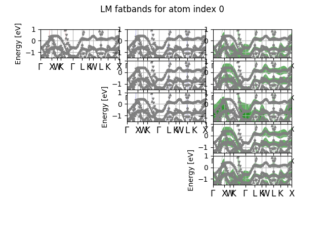

Note
Click here to download the full example code
This example shows how to plot the LM-projected fatbands. The FATBANDS file must have benn produced with prtdos 3 and prtdosm 1.
Out:
================================= File Info =================================
Name: ni_kpath_FATBANDS.nc
Directory: /Users/gmatteo/git_repos/abipy/abipy/data/refs/ni_ebands
Size: 619.35 kb
Access Time: Fri Jun 15 00:32:51 2018
Modification Time: Thu Feb 22 21:38:00 2018
Change Time: Thu Feb 22 21:38:00 2018
================================= Structure =================================
Full Formula (Ni1)
Reduced Formula: Ni
abc : 2.489016 2.489016 2.489016
angles: 60.000000 60.000000 60.000000
Sites (1)
# SP a b c
--- ---- --- --- ---
0 Ni 0 0 0
Abinit Spacegroup: spgid: 225, num_spatial_symmetries: 48, has_timerev: True, symmorphic: False
============================== Electronic Bands ==============================
================================= Structure =================================
Full Formula (Ni1)
Reduced Formula: Ni
abc : 2.489016 2.489016 2.489016
angles: 60.000000 60.000000 60.000000
Sites (1)
# SP a b c
--- ---- --- --- ---
0 Ni 0 0 0
Abinit Spacegroup: spgid: 225, num_spatial_symmetries: 48, has_timerev: True, symmorphic: False
Number of electrons: 18.0, Fermi level: 11.296 (eV)
nsppol: 2, nkpt: 101, mband: 12, nspinor: 1, nspden: 2
smearing scheme: gaussian, tsmear_eV: 0.204, occopt: 7
=============================== Fatbands Info ===============================
prtdos=3, prtdosm=1, mbesslang=5, pawprtdos=0, usepaw=0
nsppol=2, nkpt=101, mband=12
Idx Symbol Reduced_Coords Lmax Ratsph [Bohr] Has_Atom
----- -------- ----------------------- ------ --------------- ----------
0 Ni 0.00000 0.00000 0.00000 4 2 Yes
import abipy.abilab as abilab
import abipy.data as abidata
fbnc_kpath = abilab.abiopen(abidata.ref_file("ni_kpath_FATBANDS.nc"))
print(fbnc_kpath)
# NC files have contributions up to L = 4 (g channel)
# but here we are intererested in s,p,d terms only so we use the optional argument lmax
lmax = 2
# we are not interested in a small energy window around the Fermi level.
elims = [-1.5, +1]
# and a subset of bands (remember that in python we start to count from 0)
blist = list(range(4, 10))
# Plot fatbands with LM character up to lmax.
# The grid contains (lmax + 1) columns, each column has (2l + 1) subplots
# corresponding to the LM character for M in [-l, -l-1, ... 0, 1, +l].
fbnc_kpath.plot_fatbands_mview(iatom=0, fact=1.5, lmax=lmax,
ylims=elims, blist=list(range(4, 10)),
title="LM fatbands for atom index 0")
fbnc_kpath.close()
Total running time of the script: ( 0 minutes 3.956 seconds)